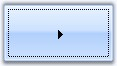
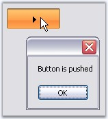

This section illustrates the solutions for various task-based queries about the control.
ButtonControl shows some special features which the user interacts with the control. Those properties are discussed in this section.
|
Properties |
Description |
|
KeepFocusRectangle |
Specifies whether rectangle will be drawn around the control when it is focussed at run time. |
|
[C#]
this.buttonAdv1.KeepFocusRectangle = true; |
|
[VB.NET]
Me.buttonAdv1.KeepFocusRectangle = True |

Figure 160: ButtonAdv with Focus Rectangle
When ButtonAdv.PushButton property is enabled, the button will remain in its pressed state, when clicked. The state of the button will be present in the property State. So by examining the state property, we can conclude whether the button is in the Pressed state or not. Using the Office2007 visual styles will help better understanding of this feature.
|
Property |
Description |
|
PushButton |
Specifies the state of the control. By default it is set to false. Set this to true. Now at run time, when the user click this button, the appearance of the button will change to pushed state and will regain its original state only by clicking it again. |
|
[C#]
private void buttonAdv1_Click(object sender, System.EventArgs e) { if(this.buttonAdv1.State==Syncfusion.Windows.Forms.ButtonAdvState.Pressed) MessageBox.Show("Button is pushed"); else MessageBox.Show("Button is in normal state"); } |
|
[VB.NET]
Private Sub buttonAdv1_Click(ByVal sender As System.Object, ByVal e As System.EventArgs) Handles buttonAdv1.Click if(Me.buttonAdv1.State==Syncfusion.Windows.Forms.ButtonAdvState.Pressed) MessageBox.Show("Button is pushed") else MessageBox.Show("Button is in normal state") End Sub |

Figure 161: Button Pressed State Identified at Run time